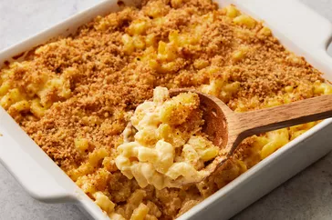

Homemade Mac and Cheese

This homemade mac and cheese is topped with buttered bread crumbs for pure comfort food. It's easy to make the cheese sauce from scratch, starting with a roux and adding milk, Cheddar, and Parmesan to make a rich, decadent sauce that coats every nook and cranny of the noodles.
Ingredients
- Macaroni
- Butter and flour
- Milk
- Cheese
- Seasonings
- Bread crumbs
Directions
- Boil the noodles, drain, and transfer to a prepared baking dish.
- Make the cheese sauce, pour the sauce over the noodles, and stir
- Make the topping, spread it over macaroni and cheese, and sprinkle with paprika.
- Bake the mac and cheese until the topping is golden brown.